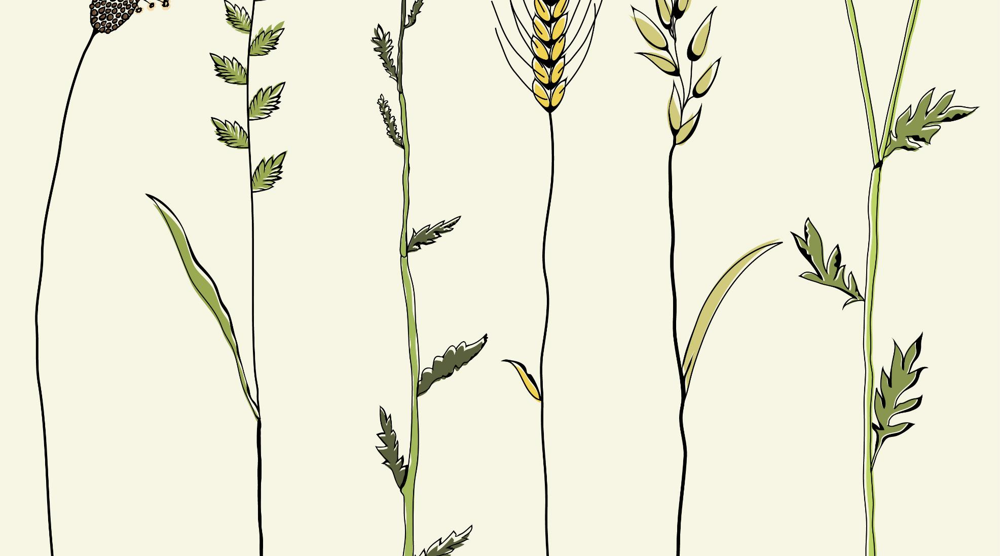

評鑑指標完整對應
六大環境教育成果展示專區
依據 115 學年度到校訪視簡報架構，完整匯聚佐證照片、成果說明與指標對照。
南投國中深植在地、落實跨域素養融入與生活實踐。結合 AI 綠能太陽能小車佳作教案、全國海洋科普繪本特優、特教農場與社區減塑，構築師生共榮的永續綠校園。

115學年度南投國中環境教育考評複評到校訪視輔導
點擊放大預覽照片南投縣立南投國民中學
「環境教育不只是知識的傳遞，更是一場從校園走入社區、連結生活與未來的永續實踐。我們帶領投中孩子從親土愛山、減塑惜物中，培養解決未來地球問題的關鍵素養。」
設置環境教育委員會，校長親自主持，跨處室擬定完整計畫。指定專人 100% 依法取得專業人員認證，落實管考機制。
結合 STEM 太陽能車組裝與生成式 AI 宣言榮獲全縣教案佳作；融入特教農場、英語雙語、自然科學與在地南投采風。
師生走訪易經大學徒步淨山、走出校門深入街區減塑淨街、親赴海生館與黑糖工坊體驗，在真實情境中培養環境倫理。
深耕海洋科普，勇奪教育部全國海洋科普繪本創作比賽第一名《鯨喜》、第三名及多項佳作，成果獲全國高度肯定！
依據 115 學年度到校訪視簡報架構，完整匯聚佐證照片、成果說明與指標對照。
為便利到校訪視輔導委員查核各項法定要求與推動績效，本校將所有佐證成果編碼對照如下，點擊即可一鍵直達相應佐證照片與簡報投影片：
| 編號 | 評鑑向度 | 評鑑指標與標準要求 | 南投國中推動成效佐證 | 佐證照片 / 投影片 |
|---|
點擊任一張照片即可開啟高解析度放大檢視與圖說。
內含 27 頁全彩投影片、110 張高解析度佐證圖片與詳細成果說明，供長官委員及校內教師隨時下載研閱。